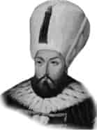

I. MUSTAFA
Babası : III. Murat
Annesi : Handan Hanım
Vefatı : 20 Ocak 1639
Saltanatı : 1617-1623 (5 yıl)
I. Mustafa güzel yüzlü, seyrek sakallı, sarı benizli ve iri gözlü bir padişah idi. Akli dengesi bozuk olduğu halde tahta çıkarıldı. Fakat saltanatı üç ayı henüz geçmişti ki, Şeyhü-lislâm’ın fetvası üzerine tahttan indirildi.
Yerine II. Osman (Genç Osman) tahta çıktı. 1622’de yine bir entrika ile tahtan indirilen ve Yedikule’de şehit edilen Genç Osman’ın yerine tekrar I. Mustafa geçti. II. defa tahta çıkarıldı. Zamanında tarihteki meşhur Sultan Ahmet vakası meydana geldi. Halktan bir yiğit “Sultan Osman’ı niçin öldürdünüz?” diye askerlerin üzerine yürüdü. Çeşitli manevralarla tam seksen kişinin ölmesine sebep oldu. Bir müddet sonra Kapıkulu sipahileri ayaklandı. Genç Osman’ı öldürdüğü bilinen Davut Paşa idam edildi. Handan Sultan, 8 Ocak 1623 tarihinde devlet erkânını toplayarak karar verip, aklen yetersiz olan II. Mustafa’yı tahttan indirdiler. Şeyhülislâm Esad Efendi’nin, tahttan indirilmesine vermiş olduğu fetvasında: “Akli dengesi bozuk olanın Hilafeti caiz olmaz” dedi.
Vefatında 47 yaşında idi.
Çocuğu yoktu.